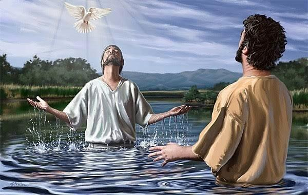

Contents

We acknowledge that Yochanan the Baptist, Yahushua, Sha'ul, and most of the disciples and apostles were followers of the Notri or Nazarene sect, known for their dedication to observing the teachings of the Torah.
Ma’asei/Act 245“For having found this man a plague, who stirs up dissension among all the Yehuḏim throughout the world, and a ringleader of the sect of the Natzarenes
To gain insight into Yochanan's act of "baptizing" Hebrews in the Yarden river, it becomes necessary to refer to The Torah. He was not creating a completely novel practice or tradition called "baptism," but rather participating in the Mikvah ritual in natural bodies of water.
The act of immersing oneself in flowing water, known as Mikvah, is a ritualistic practice used to purify a person for various purposes, such as healing, repentance, or the consecration of a priest. It is important to note that this practice requires the use of moving water, rather than stagnant water, to signify life and vitality. To fully grasp the importance of Yochanan, the Zadok High Priest from Nazareth, performs a baptism ritual on Yahushua, another Zadok High Priest from Nazareth in the desert. We need to understand the rationale behind the Mikvah tradition as described in The Torah.
After the murder of the High Priest Yahushua III by Herold, Yochanan chose to live a secluded life in the wilderness, possibly to steer clear of Herod. During this time, he actively voiced his opposition to the corrupt Temple Priestly System in Yerushalayim. Yahushua followed the same journey as Yochanan later on. The Dead Sea Scrolls' discovery suggests that a significant portion of Yahushua's teachings were influenced by Yochanan, also known as the "Essene Teacher of Righteousness". Yahushua praised Yochanan very highly for good reason:
.Mattithyahu/Matthew 11
11 “I tell you the truth, among those born of women, no one has arisen greater than Yochanan the Baptist.
Yochanan was driven into the wilderness to serve as High Priest because Herod had appointed his own Temple Priests who did not follow the Torah's requirement of laying hands on Mikvah. This was one of the reasons he chose to serve the people instead. Yahushua needed to receive the Aharonic Priestly Authority, which made him the righteous High Priest/King (Melchizedek), through the Mikvah process and by having יהוה's chosen High Priest perform the laying on of hands. Yahushua needed to undergo a purification process, through Mikvah, to fully satisfy all moral and religious requirements. Keep in mind, that being righteous means following and obeying the Torah/Laws. Yahushua's message to Yochanan was that to fully comply with The Torah and assume the role of High Priest, he needed to undergo the ritual of Mikvah.
Luqas/Luke 313Then Yahushua came from Galilee to the Yarden to be Mikvah'd by Yochanan. 14But Yochanan tried to deter him, saying, “I need to be Mikvah'd by you, and do you come to me?” 15Yahushua replied, “Let it be so now; it is proper for us to do this to fulfil all requirements in The Law.” Then Yochanan consented.
Yahushua had to be immersed in water by only Yochanan, as it was foretold that he would fulfil this role as the High Priest.
Malachi 31“I will send my messenger, who will prepare the way before me. Then suddenly יהוה (whom) you are seeking will come to his temple; the messenger of the covenant (the Great Notsri), whom you desire, will come,” says יהוה Almighty.
Yahushua said Malachi and Yeshayahu/Isaiah were speaking of Yochanan:
Mattithyahu/Matthew 17:11-13"Yahushua replied, "To be sure, Eliyah comes and will restore all things. But I tell you, Eliyah has already come, and they did not recognize him, but have done to him everything they wished. In the same way the Son of Man is going to suffer at their hands." Then the disciples understood that he was talking to them about Yochanan the Baptist"
All the events described in Zekaryah/Zachariah 3's vision about The High Priest Yahushua have been fulfilled in the life of The Messiah. The concept of Yahushua's Mikvah as taught by Yochanan holds immense significance, as it serves as the fundamental teaching that is essential for advancing one's understanding of the Messiah.
Mikvah to ritually cleanse
Mikvah is an essential compliance with The Torah/Law. This is the reason Yahushua insisted that Yochanan proceed despite Yochanan acknowledging Yahushua's position as the Ruling Zadok. Yahushua, also known as Melchizedek, had no human superior who was qualified to mikvah him except for Yochanan. Yochanan, who was given the authority by יהוה, prophesied and served as the anointed High Priest and mentor of Yahushua, also known as "Eliyah. "
The practice of Mikvah, as prescribed by יהוה in The Torah/Law, serves various purposes. However, the focus of this article is on its significance in the consecration of priests. For further details, please refer to the relevant information.
http://en.wikipedia.org/wiki/Mikvah
Yahushua's role as High Priest started when he was ceremoniously prepared for his duties (Mikvah) by the established High Priest Yochanan, who belonged to the House of Zadok. Eventually, Yahushua himself would offer the ultimate Pesach Sacrifice. Yochanan bestowed his authority as the Priesthood to Yahushua, the Zadok High Priest, by placing his hands on his head. Following this, Yahushua was immersed in water to cleanse him from all sins before יהוה. In a similar manner depicted in Zekaryah/Zachariah 3, Yahushua was fully prepared to commence his role as The Messiah. He had been consecrated as The Pesach Lamb, and the burden of the world's sins had recently been placed upon him.
We see in The Jewish Encyclopaedia that an Aharonic High Priest was required to lay hands on the "scapegoat" thereby transferring the sins of the people onto the spotless lamb on Pesach and the goat on the Day of Atonement.
When a quadruped offering is brought into the sanctuary and found to be suitable, the one making the offering places their hand on the head of the animal after it has been examined. The high priest placed both of his hands on the scapegoat. The act of "laying on of hands" (also known as "semikah") cannot be carried out by someone else.
http://www.jewishencyclopedia.com/view.jsp?artid=35&l… hnHOY8
It's not surprising that Yahushua chose to retreat to the desert, similar to how scapegoats often did. If you were burdened with the sins of the entire world and became the representative sacrifice for all of humanity, what choices would you make? Personally, I would also follow the same path and seek guidance from יהוה. I would remain in the desert until I received confirmation from יהוה that I truly was The Messiah.
Yahushua precisely accomplished that, obtaining assurance within a span of 40 days and nights. יהוה adorned Yahushua as the High Priest and led him to emerge from the desert as The Branch or "Notsri". Yahushua the Nazarene, now departing from that desert as the established High Priest and King of Yisra’el by bloodline and inheritance.
It should be noted that during the time of Malachi, there is evidence that the High Priests in the Temple ceased the practice of laying on of hands. In order to reinstate this just procedure, the High Priest Yochanan (also known as the Yochanan the Immerser) had to retreat to the desert by the Yarden River. This was necessary for him to purify himself from the common people and fulfil his duties as a High Priest accurately.
This action was required in order to reinstate the position of the High Priest according to the guidelines set by the Torah. Yahushua was unable to participate in the Temple for the purpose of being consecrated or prepared as the Pesach Lamb, as the system had become corrupted. Yahushua sought out Yochanan, who had been specifically chosen by יהוה to sanctify and train Yahushua as the High Priest and Passover Lamb. Yochanan acknowledged his responsibility and, upon spotting Yahushua, was unable to restrain his excitement any further. He energetically proclaimed to all the Nazarenes who were following him.
"Behold! The Lamb who will take away the sin of the world!"
Exactly Yochanan... Exactly how I feel. Behold... my King, my Pesach Lamb, my Yom Kippur, my High Priest, my brother... Yahushua who is my Messiah!
Praise be to יהוה. The divine message or purpose of יהוה has manifested in physical form. יהוה, in accordance with His promise, fulfilled it through Yahushua by sending us a human Messiah who would remove our sins and fulfil the symbolic act of Avraham sacrificing Yitshaq/Isaac. Yitschaq is being saved by someone in his place. Yahushua, who is The Eternal High Priest from the House of Zadok, would offer himself as a sacrifice, being the firstborn son of יהוה, to bring an end to the annual tradition of substituting a lamb for Passover. That is the reason why his sacrifice remains eternal. We no longer require an annual replacement. The life of the eldest child has paid the price for sin, which is death.
Death has no power over someone who is innocent, and therefore it was unable to keep hold of Yahushua. I have a sacred agreement with יהוה, made possible through the sacrifice of Yahushua. His death ensures that I will not be bound by death, and I am now reinstated to a state of perfect obedience and proven innocence. I have successfully fulfilled the Divine Decrees outlined in
The Torah/Law, which would have otherwise declared me guilty. As a result, I am now entitled to receive all the blessings and rewards promised in The Torah/Law for my obedience.
The necessary purification process prior to constructing the Temple of יהוה was a righteous obligation.
Yahushua is the chief architect and cornerstone of the Temple. He is required to undergo a Mikvah to achieve ritual purity in that position. יהוה appointed Yahushua III, the High Priest who oversaw the building of the Second Temple, as a symbol or prediction of Yahushua the Messiah. In the future, it would be Yahushua the Messiah, who is Yahushua III's grandson, that would play a crucial role as the main designer and foundational stone of the ultimate and eternal Temple of יהוה.
In a similar way to how Yahushua, the son of Nun, was selected by יהוה to succeed Mosheh and guide the children of Yisra'el into the Promised Land, the entire nation of Yisra'el needed to undergo a purification ritual in the Red Sea passage. All of these serve as representations and previews/shadows of the future Messiah.
Yahushua, the Living Water - The Feast of Sukkot
Yahushua uttered particular words during the final day of the Feast of Sukkot that caused significant uproar within the Temple courts. In the scriptural passage of Yochanan 7:37, it states:
Yochanan/John 737In the last day, that great day of the feast (of Sukkot), Yahushua stood and cried out in a loud voice, saying, “If any man thirst, let him come unto me, and drink.”
Imagine a scenario where a man boldly stands in the middle of the Temple during Sukkot, interrupting the High Priest who was in the process of drawing water from a well. This man, Yahushua, firmly believed that he was the true anointed High Priest and the legitimate successor to Yahushua III. In his eyes, those who were appointed by Herod to the position of High Priest were mere imposters.
On that day Yahushua spoke these words, a water ceremony was performed at The Altar. Can you grasp the importance of this ceremony? Are you aware of the exact well in Jerusalem where they obtained the water from? Were you aware that the well water had a specific name? Which Psalms were chanted during this Temple ritual? It is my intention to pique your curiosity about these facts, but they are not the central subject of this article. To gain a comprehensive understanding of these concepts, please refer to:
http://foundationsmin.org/studies/tabernacles.htm
“Christian Baptism”
The Christian Church adopted the entirety of its concept from ancient pagan rituals. When researching the concept of "baptism," very little is said about the Mikvah and no explanation is provided for Yahushua's reason behind it. The concept that Jesus instituted a new ritual referred to as a "sacrament" or "religious rite of Jesus Christ" is commonly taught. The deceptive church, along with its deceptive messiah, has completely taken control of every important element of יהוה's Plan of Salvation and substituted them with pagan rituals.
No, Yahushua did not establish a "new ritual". This statement is completely untrue, and Yahushua himself acknowledged this when he mentioned that he needed to fulfil the entire Torah in order to carry out his actions. Yahushua did not introduce any new concepts or establish anything that was not already outlined by יהוה in The Torah.
Smart paraphrase: The act of tapping Christian Baptism candidates on the forehead three times to symbolize the pagan Trinity has evolved to include infants being lightly sprinkled with water and also receiving a name. All of it derives from paganism. In line with their Christian beliefs, just like with their other teachings, the concept of baptism consistently causes disagreement and arguments among different denominations. Do you recall the person responsible for creating the concept of "confusion". Precisely! There will be no confusion as long as the Torah/Law of יהוה is not abolished.
Reference: http://en.wikipedia.org/wiki/Baptism
In a vast ocean of human tradition, there lies a perplexing and brief paragraph discussing the Mikvah, a Jewish ritual. It is often argued that Christianity has gone to great lengths to discourage the influence of Judaism, but in truth, it is rooted in the Hebrew customs and rituals bestowed by יהוה upon Mosheh.